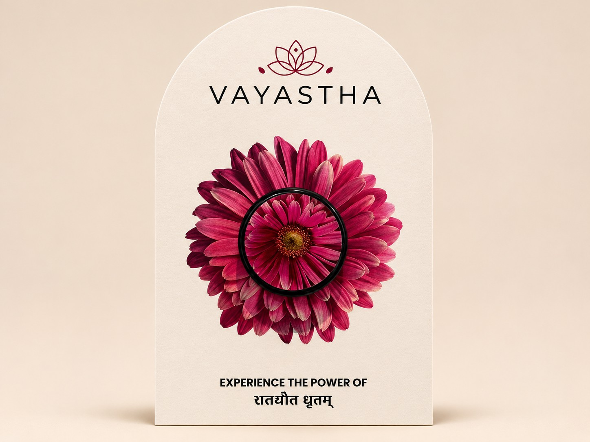

The skincare collection
Shat Dhauta
Ghrita

Made with Gir cow's ghee, this Ayurvedic cream moisturizes your face and neck.
Buy on Amazon Explore the details ↓
Skin benefits
Soft, smooth skin
Shat Dhauta Ghrita moisturizes your face and neck, leaving skin feeling soft and smooth with a natural glow.
- Featured ingredient
- Gir cow's ghee
- Texture
- Smooth ivory cream
- Amount per use
- Pea-sized
- Application
- Face and neck
Your daily skincare ritual
Cleanse
Wash your face with plain water or a gentle face wash.
Apply
Take a pea-sized amount on clean fingertips. Spread a thin layer over your face and neck.
Massage
Use gentle, upward circular motions for 1–2 minutes.
Leave on or rinse
Leave on overnight, or rinse with lukewarm water after 15–20 minutes.
Ordering & delivery
Enter your PIN code on Amazon India for current pricing, availability and delivery estimates.